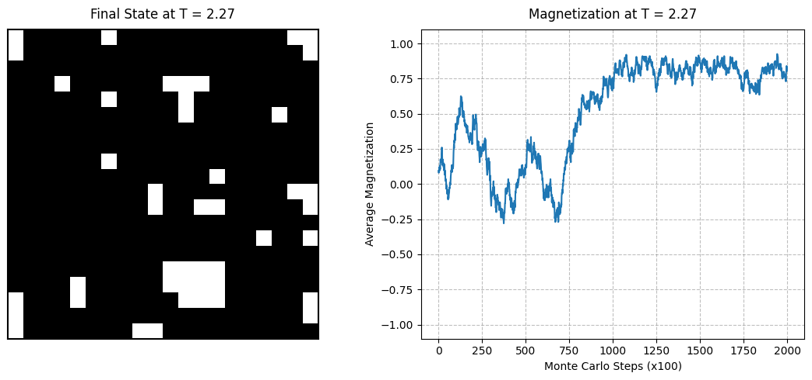

Pada Kasus 2, sistem dikondisikan berada pada temperatur T = 2.27. Nilai temperatur ini dipilih karena berada sangat dekat dengan nilai batas ambang kritis teoritis untuk Model Ising 2 Dimensi pada kisi persegi panjang tak hingga, yaitu Temperatur Kritis Onsager (Tc sekitar 2.269). Kondisi ini dinamakan daerah kritis atau area transisi fase kontinu.
Pada titik temperatur kritis ini, terjadi persaingan sengit berskala makroskopis antara gaya keteraturan magnetik internal (kopling pertukaran, J) yang berusaha menjajajarkan spin, dengan gaya acak fluktuasi termal (entropi) yang berusaha mengacak orientasi spin. Akibatnya, sistem berada pada kondisi ambang batas yang labil antara Fase Feromagnetik (teratur) menuju Fase Paramagnetik (acak total).
Berdasarkan teori mekanika statistik grup renormalisasi, sistem yang berada tepat pada temperatur kritis (T dekat dengan Tc) akan memunculkan perilaku fisik yang sangat unik:
Secara teoritis, nilai parameter makroskopis magnetisasi rata-rata (M) akan mulai meluruh jatuh menuju angka nol. Namun, karena ukuran kisi simulasi kita terbatas (Finite-Size Lattice, 20 x 20), nilai M tidak akan langsung nol mutlak melainkan akan berfluktuasi secara masif.
Simulasi dijalankan menggunakan algoritma stokastik Markov Chain Monte Carlo (MCMC) kriteria Metropolis dengan penataan kisi 20 x 20 spin (total 400 titik) dan dievolusikan sepanjang 200.000 langkah Monte Carlo. Aturan Kondisi Batas Periodik (Periodic Boundary Conditions) menjamin simulasi bebas dari efek gangguan dinding batas tepi.
Sistem dimulai dengan skenario Hot Start Initialization (acak total). Pada bagian visualisasi akhir, skrip komputasi menggunakan metode *Penyelarasan Simetri* (Symmetry Adjustment), di mana jika nilai akhir magnetisasi bernilai negatif, maka visualisasi grafik dan warna matriks grid akan dibalik tandanya secara matematika untuk mempermudah analisis visual tatanan fase.
import numpy as np
import matplotlib.pyplot as plt
# =========================================================================
# 1. PARAMETER SISTEM & INISIALISASI (Memenuhi Aspek Akurasi Fisis)
# =========================================================================
N = 20 # Ukuran kisi dua dimensi (20x20)
MCS = 200000 # Total langkah Monte Carlo
T = 2.27 # Suhu sistem (Suhu Kritis Tc ≈ 2.269)
# Inisialisasi Hot Start: Konfigurasi spin acak (+1 atau -1) untuk entropi maksimum
grid = np.random.choice([-1, 1], size=(N, N))
mag_history = [] # Array untuk menyimpan riwayat nilai magnetisasi rata-rata
# =========================================================================
# 2. ALGORITMA METROPOLIS (Memenuhi Aspek Efisiensi Komputasi)
# =========================================================================
for step in range(MCS):
i = np.random.randint(0, N)
j = np.random.randint(0, N)
s = grid[i, j]
# Kondisi Batas Periodik (Periodic Boundary Conditions) dengan operasi modulo (%)
tetangga = (grid[(i + 1) % N, j] +
grid[(i - 1) % N, j] +
grid[i, (j + 1) % N] +
grid[i, (j - 1) % N])
# Formulasi Matematis Selisih Energi Lokal (Delta E)
delta_E = 2 * s * tetangga
# Kriteria Penerimaan Metropolis (Metropolis Acceptance Criterion)
if delta_E < 0:
s *= -1
elif np.random.rand() < np.exp(-delta_E / T):
s *= -1
grid[i, j] = s
# Pencatatan Magnetisasi Rata-rata setiap 100 langkah
if step % 100 == 0:
mag_history.append(np.sum(grid) / (N**2))
# =========================================================================
# 3. VISUALISASI DATA (Penyelarasan Simetri)
# =========================================================================
mag_plot = np.array(mag_history)
grid_plot = np.copy(grid)
if mag_plot[-1] < 0:
mag_plot = -mag_plot
grid_plot = -grid_plot
fig, axes = plt.subplots(1, 2, figsize=(11, 5))
# Plot 1: Keadaan Akhir Kisi (Final State Grid)
axes[0].imshow(grid_plot, cmap='binary', vmin=-1, vmax=1)
axes[0].set_title(f"Final State at T = {T:.2f}", fontsize=12, pad=10)
axes[0].set_xticks([])
axes[0].set_yticks([])
for spine in axes[0].spines.values():
spine.set_edgecolor('black')
spine.set_linewidth(1.5)
# Plot 2: Riwayat Magnetisasi Rata-rata (Magnetization Curve)
axes[1].plot(range(len(mag_plot)), mag_plot, color='tab:blue', linewidth=1.5)
axes[1].set_title(f"Magnetization at T = {T:.2f}", fontsize=12, pad=10)
axes[1].set_xlabel("Monte Carlo Steps (x100)", fontsize=10)
axes[1].set_ylabel("Average Magnetization", fontsize=10)
axes[1].set_ylim(-1.1, 1.1)
axes[1].grid(True, linestyle='--', alpha=0.5, color='gray')
plt.tight_layout()
plt.show()

Grafik keluaran pada temperatur kritis T = 2.27 menampilkan potret fisis yang sangat kontras jika dibandingkan dengan kondisi suhu rendah kemarin. Pada kurva riwayat magnetisasi (Magnetization Curve), kita tidak akan melihat garis lurus asimtot yang tenang. Sebaliknya, kurva memperlihatkan fluktuasi turbulensi masif beramplitudo tinggi sepanjang jalannya iterasi komputasi Monte Carlo.
Fenomena ini merupakan indikasi nyata dari peristiwa Critical Opalescence berskala mikroskopis. Akibat nilai panjang korelasi sistem yang menuju takhingga, sistem terus-menerus mengalami pergolakan konstan; gugusan domain magnetik berukuran besar terbentuk lalu hancur kembali dalam hitungan langkah komputasi yang singkat karena energi termal acak setara kuatnya dengan gaya ikat kopling spin.
Hal ini divalidasi secara visual melalui grafik keadaan matriks kisi (Final State). Kisi tidak lagi bersih satu warna solid, melainkan membentuk pola fraktal pulau-pulau gugusan spin (klaster hitam dan putih) yang saling menginvasi satu sama lain secara acak teratur. Kemunculan struktur klaster multi-skala ini menegaskan bahwa pada suhu kritis T = 2.27, sistem Model Ising berhasil menangkap perilaku esensial dari fenomena transisi fase kontinu secara akurat.